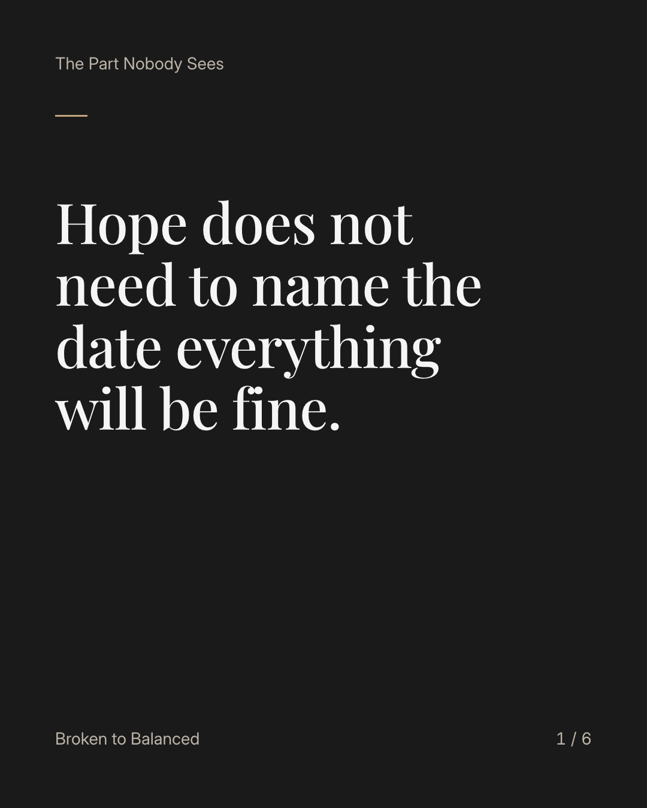
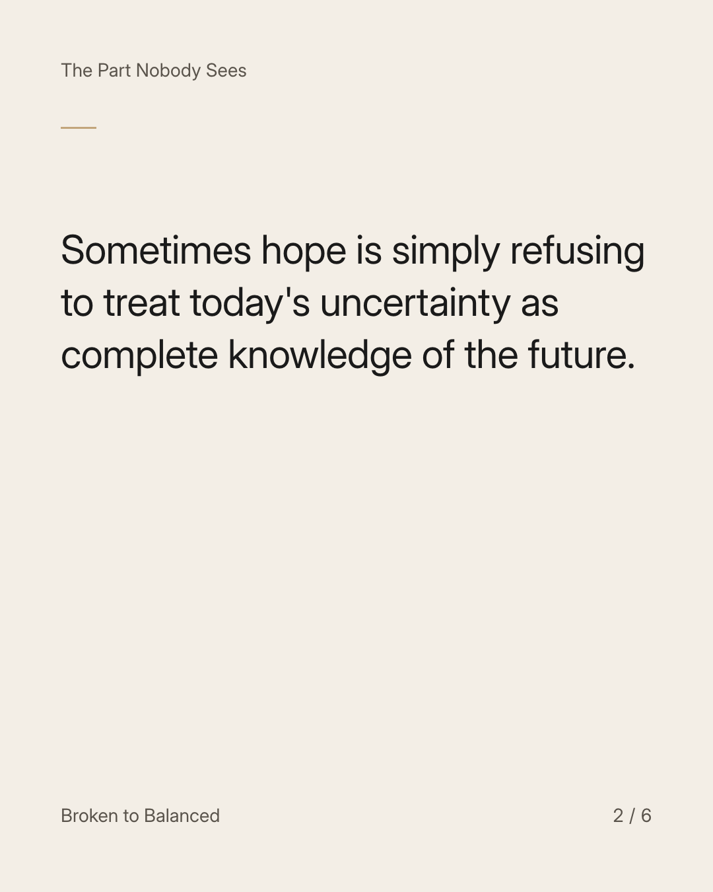
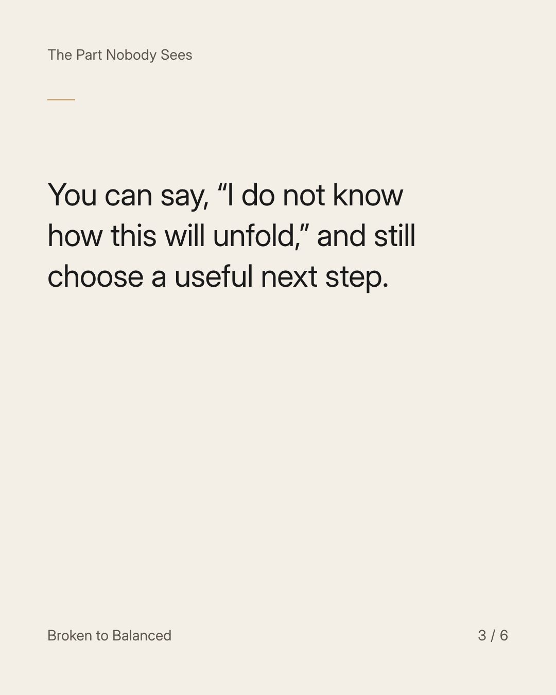
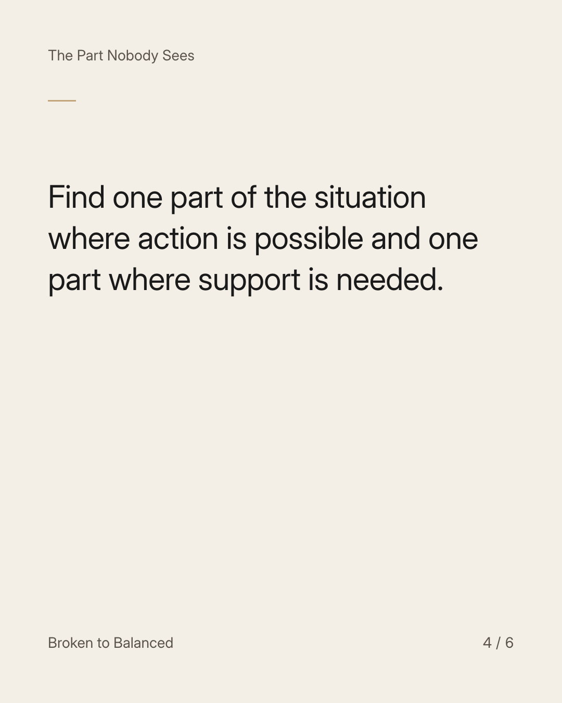
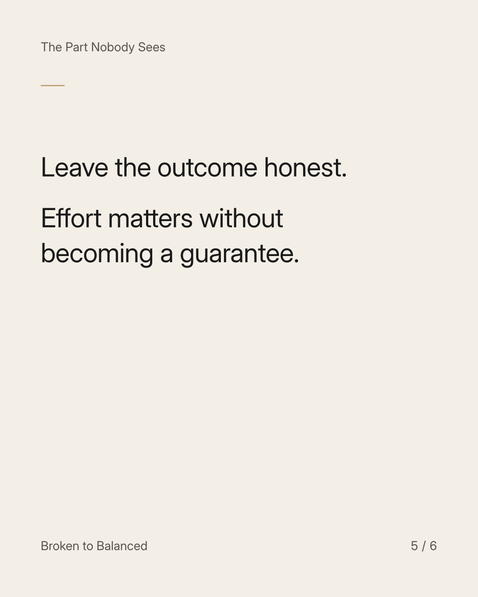

Exact text and accessibility text
Hope does not need to name the date everything will be fine.
Slide 1 of 6. Hope does not need to name the date everything will be fine.


Exact text and accessibility text
Sometimes hope is simply refusing to treat today's uncertainty as complete knowledge of the future.
Slide 2 of 6. Sometimes hope is simply refusing to treat today's uncertainty as complete knowledge of the future.


Exact text and accessibility text
You can say, “I do not know how this will unfold,” and still choose a useful next step.
Slide 3 of 6. You can say, “I do not know how this will unfold,” and still choose a useful next step.


Exact text and accessibility text
Find one part of the situation where action is possible and one part where support is needed.
Slide 4 of 6. Find one part of the situation where action is possible and one part where support is needed.


Exact text and accessibility text
Leave the outcome honest. Effort matters without becoming a guarantee.
Slide 5 of 6. Leave the outcome honest. Effort matters without becoming a guarantee.

Exact text and accessibility text
Send this to someone who wants hope without another promise nobody can verify.
Slide 6 of 6. Send this to someone who wants hope without another promise nobody can verify.
Exact caption
Plain-text fallback: select and copy the caption.